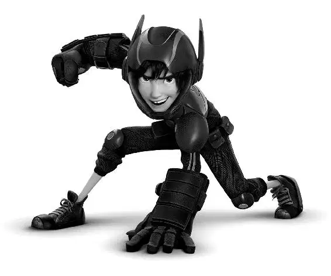

Hiro flailed his arms and grabbed onto the end of a metal pipe. Holding the pipe, Hiro fought against being pulled into the vortex of the portal. He watched his team below, and saw they were being beaten badly.
Yokai laughed as the microbots grabbed Fred’s arms and pulled.
“They’re tearing me apart!” Fred howled.
Then Yokai turned to Wasabi. He had him pinned between two walls of microbots. “Getting a little tight!” Wasabi said as the walls closed in.
Go Go was immobilized in a ball of microbots. “I could use a little help!” she called.
Everyone seemed to be in a jam, even Honey. She had covered herself in a chemical dome, but the microbots were hammering on it.
Hiro was suddenly frightened. He could see them losing the battle. They could all be sucked into the portal. As he hung upside down, he watched pieces of debris and loose microbots fall into the gaping maw. “That’s it! I know how to beat him!”
He yelled into his communicator, “Hey! Listen up! Use those big brains to think your way out! There are no dead ends!”
It was just the jolt of inspiration the team needed.
Fred grabbed a fallen sign. Spinning the sign, he sliced through the microbots that were holding his Kaiju suit. “Oh, it’s Fred time!” he howled. “And we don’t need a super suit for the super signspin!”
At the same time, Go Go revved her wheels until they smoked—and sliced through the sphere of microbots around her.
Held between two walls of bots, Wasabi knew the best way to escape was to go down. Using his laser hands, he dug through the floor and was free. Honey latched on to a string of microbots that had penetrated her dome. They pulled her to freedom.
But the robot was still surrounded. “Baymax!” Hiro called. He gasped as a sharp piece of debris flew past and cut him.
Baymax looked up, and the two stared at one another before Baymax was completely covered with microbots. Hiro gasped, and then he felt his hands slip on the pipe.
Suddenly, Baymax’s rocket fist shot out of a mound of microbots.
The rest of Baymax caught up to his fist and he grabbed Hiro just as the pipe gave way. Krei and Callaghan could only watch. “I love that robot!” Krei shouted.
With a snarl, Callaghan used the microbots to trap Krei against a billboard. Hiro rode Baymax down to the ground, where the team was ready and waiting for action.
“Here’s the plan,” Hiro told them as he looked toward Callaghan. “We gotta force him up. Close to the portal. Honey, Fred, can you give us a little cover?”
“Let’s do this, Freddie!” Honey shouted.
“Like you have to ask,” Fred said as he blew a blast of smoke from his Kaiju nostrils. “Smoke screen!”
“Yes!” Hiro cheered as the two disappeared in the cloud of smoke. “All right, Wasabi, here’s what I want you to do—”
“I’m good, man!” Wasabi interrupted. “I don’t need a plan. Wasabi is winging it.” Wasabi ran in and slashed away at the columns of microbots. Go Go sent discs flying at the columns as well, causing large cracks to appear. Honey threw chem-balls into the cracks. The expanding goo caused the columns to shift.
Hiro smiled. They were finally working together as a team.
Baymax and Hiro flew toward Callaghan, drawing an attack of swirling microbots toward the portal. At the last second, they reversed into a dive, going straight into the microbots, which engulfed them.
Hiro activated Baymax. “Back kick! Knife hand! Roundhouse! Hammer fist!” he called out in quick succession. Baymax went at the microbots with a whirlwind of karate moves.
“This ends now!” Callaghan shouted. With one final push, he threw a swarm of microbots at Hiro and Baymax. But with a mighty blow, Baymax punched thousands of microbots into the portal.
The columns shook and Callaghan staggered. With very few microbots left, he struggled to maintain his balance. “No!”
“It’s over, Callaghan!” Hiro shouted. “Hand over the mask.”
“Never,” Callaghan snarled.
“I thought you’d say that,” Hiro said. “Fred?”
Fred leaped at Callaghan. “Fred time!” he called as he grabbed the mask. Instantly, the microbot columns collapsed, sending Krei and Callaghan tumbling toward the ground.
Baymax caught the two men in midair.
Hiro watched the columns of microbots holding the portal come apart. With a great shudder, the whole thing crashed to the ground!
Hiro and his friends cheered. The portal had been destroyed and the microbots were lying in heaps!
But seconds later, it was clear that the broken portal was still active. “It’s still on!” Hiro said to Krei. “We have to shut it down!”
The portal was sucking in everything around it. Then, pulsing with light, it began sucking in parts of itself.
“We can’t!” Krei cried. “The containment field is failing. The portal’s going to tear itself apart.”
“We need to get out of here, now!” Hiro shouted. Everyone was turning to run when Hiro looked back and saw Baymax staring at the portal. “Baymax!” he shouted.
“My detector is sensing signs of life,” Baymax said.
“What?” Hiro said.
“Coming from there,” Baymax replied, pointing at the portal. “The life signs are female. She appears to be in hyper-sleep.”
Hiro gasped. “Callaghan’s daughter!” he said. “She’s still alive?”
“Abigail!” Callaghan said. Hiro saw the hope in Callaghan’s eyes. Then he looked to his team. He knew if there was a chance she was alive, he had to try to save her. He looked at Baymax. “Let’s go get her.” He climbed onto the robot’s back.
Krei stood next to the team on the ground. He said, “The portal is destabilizing. You don’t have much time.”
Honey was worried. “Hiro, it’s too dangerous.”
“She’s alive in there,” Hiro told his team. “Someone has to help.”
The team looked at each other and then back at Hiro and Baymax. They understood that Hiro would always be the person who would offer help. Just as Tadashi had been. “What do you say, buddy?” Hiro asked Baymax with a smile.
“Flying makes me a better health-care companion.”
And with that, the team watched Baymax and Hiro rocket into the portal.
